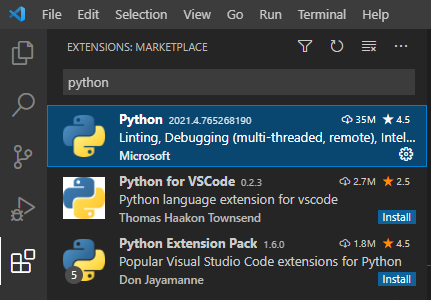
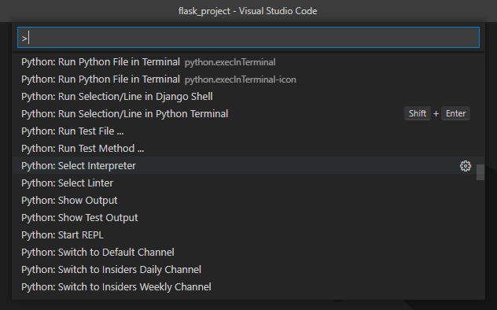
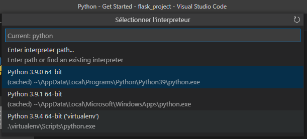
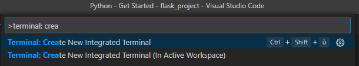
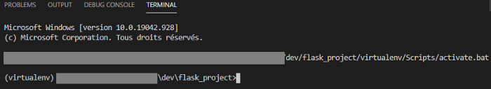
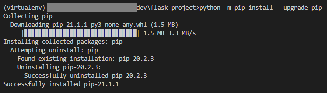
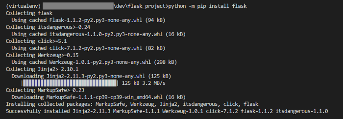
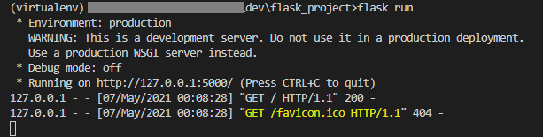
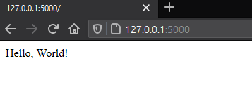

How to Start a Flask Project Using Visual Studio Code

Flask is a Python web micro-framework. “Micro” because it doesn’t require any particular tools or libraries. Flask main objective is to keep a simple but extensible core. There is no database abstraction feature, no authentication, no cookie manager … because a lot of extensions already did it well !
So, at the opposite of an all-in-one framework such as Django, you can do whatever you want with Flask but nothing more. It is a very popular framework and production ready.
As said on Flask official website (https://flask.palletsprojects.com) :
The “micro” in microframework means Flask aims to keep the core simple but extensible. Flask won’t make many decisions for you, such as what database to use. Those decisions that it does make, such as what templating engine to use, are easy to change.
Prerequisites
First of all, make sure you have the required Python version. Flask supports Python >3.5, >2.7 and even PyPy. Check the newest version on the official website https://www.python.org/downloads/
Second of all, install the Python extension using the Visual Code website https://marketplace.visualstudio.com/items?itemName=ms-python.python or directly on the application :

Set up your python environment
First, you should create a virtual environment. The main purpose is to isolate the libraries you install on your project only. With a virtual environment, you avoid installing Flask into your global Python environment and give you full control over the libraries.
Create a new directory for this project. Let’s call him “flask_project”. In that folder, use this command to create a virtual environment named “virtualenv” :
python -m venv virtualenv
Open your new project in Visual Studio Code File → Open Folder, open the command palette View → Command Palette and select the “Python: Select Interpreter” command :

It will lists every available interpreter. For this example, you must select the interpreter into your virtual environment directory “virtualenv” :

The next step is to create a terminal using the “Terminal: Create new Integrated Terminal” from the command palette. It will create a terminal and initiates the virtual environment using the ./virtualenv/Scripts/activate.* scripts.

The terminal should appear at the bottom of Visual Studio Code.

The last step to setup your Flask project is to install it using pip. But first, let’s update pip utility in the virtual environment with the following command :
python -m pip install --upgrade pip

And then you can finally install Flask :

Create and run your first Flask application
Now, you have the required Python version, the Python plugin for Visual Studio and a virtual environment with the last Flask version. It is time to create your first application.
First of all, create a new app.py file into your project directory :
from flask import Flask
app = Flask(__name__)
@app.route('/')
def hello_world():
return 'Hello, World!'
We use the route() decorator to register a view function for a given URL (as a parameter). In this example, the triggered URL is “/”.
Save your file and run the following command into the Visual Code Terminal to start the web server :
flask run

Flask looks for app.py by default. If you named the file differently, you should export the FLASK_APP environment variable with the file name you used.
As described into the terminal, open a web browser and go to http://127.0.0.1:5000/. You should see the returning string on the route(‘/’) decorator (note that you can see every HTTP requests into the terminal) :

And that’s all ! You just created your first Flask “Hello World” application. In the next article, I will explain how to debug a Flask application.